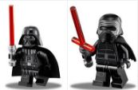

Star wars!
Red Leader... This is Gold Leader. We're starting out attack run. I copy, Gold Leader. Move into position. Stay in attack formation! The exhaust post is... marked and locked in! Switch power to front deflector screens. How many guns do you think, Gold Five. I'd say about twenty guns. Some on the surface, some on the towers. Death Star will be in range in five minutes. Switching to targeting computer. Computer's locked. Getting a signal. The guns...they've stopped! Stabilize your read deflectors. Watch for enemy fighters.

Close up formation. You'd better let her loose. Almost there! I can't hold them! It's away! It's a hit! Negative. Negative! It didn't go in. It just impacted on the surface. Red Leader, we're right above you. Turn to point... oh-five, we'll cover for you. Stay there... I just lost my starboard engine. Get set to make your attack run.
Luke! Luke! Luke! Luke! Luke, Luke, grab a hold of this. Blast it, will you! My gun's jammed. Where? Anywhere! Oh!! Luke! Luke! Grab him! What happened? I've got a very bad feeling about this. The walls are moving! Don't just stand there. Try to brace it with something. Wait a minute! Threepio! Come in Threepio! Threepio! Where could he be?